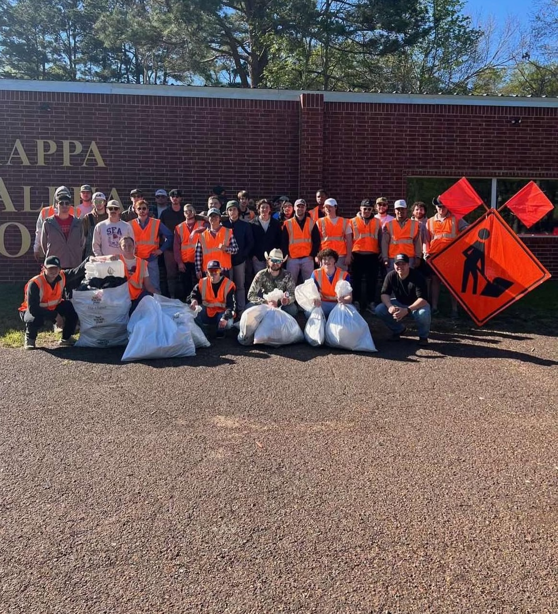
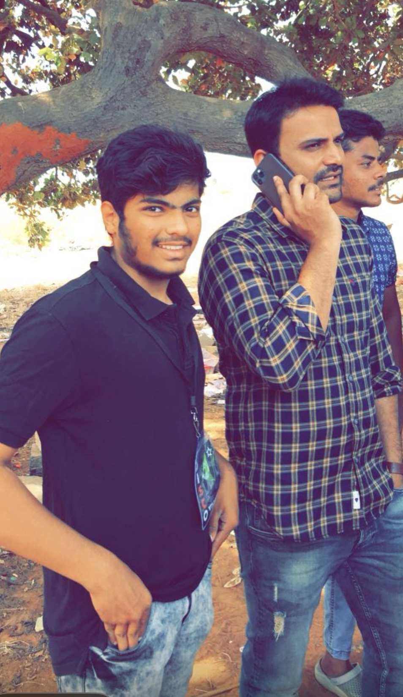
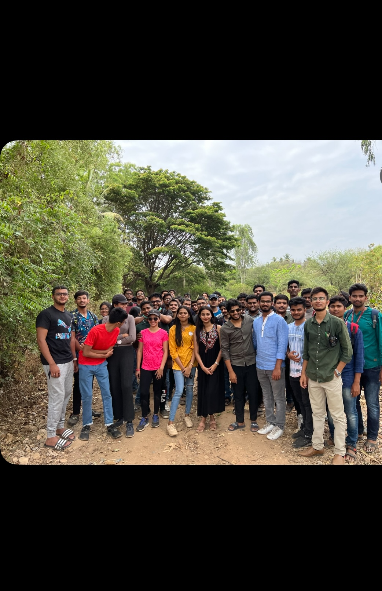
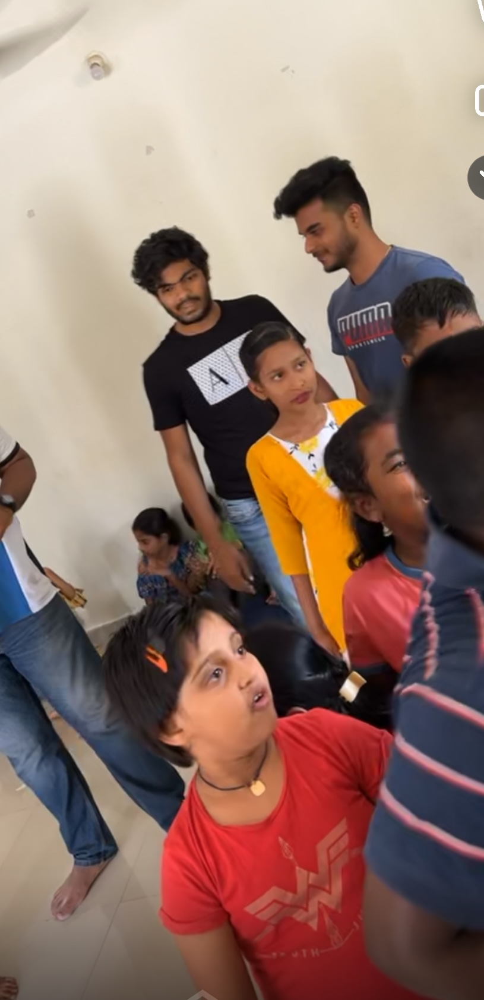
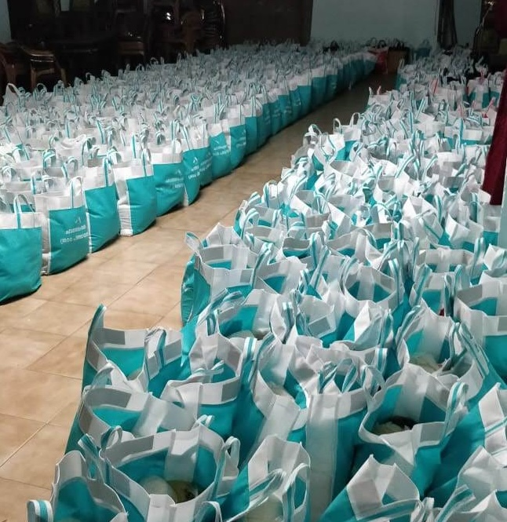

VOLUNTEERING EXPERIENCES
As a passionate advocate for social impact, I immerse myself in volunteer work to uplift our community. Engaged with non-profits and student organizations, I advocate for those in need, striving to amplify their voices and provide support. Together, let's make a meaningful difference and foster positive change.
Member Pi Kappa Phi Fraternity
At NJIT, I proudly serve as a dedicated member of the Pi Kappa Phi fraternity, I actively contributed to community service, philanthropic events, and leadership development initiatives. I spearheaded multiple projects focused on environmental cleanup and fundraising for local causes. My role also involved organizing events and mentoring new members, fostering teamwork and collaboration. These experiences reflect my commitment to service, leadership, and personal growth.”.
Member of core Team Head
As a Core Team Head during my undergraduate studies, I championed student rights, acted as a liaison between students and administration, and led the successful planning and execution of the annual college fest, which attracted significant participation. I managed sponsorships, budgets, and cross-departmental coordination, while mentoring junior team members and fostering leadership. Additionally, I initiated programs to promote diversity and inclusivity, enhancing the overall student experience on campus.
Empowered 1000 elderly villagers
Successfully organized and led a week-long initiative to assist nearly 1,000 elderly individuals in villages across Karnataka. Coordinated resources and support systems to address their essential needs, including healthcare and daily assistance, ensuring impactful and sustainable outcomes for the community.
Children's welfare activities
 As part of our involvement with the Children's welfare Foundation, we had the privilege of spreading joy to child orphanages, Spending the entire week with the children, we brought smiles and laughter by organizing various activities and providing gifts. With one of our team members help, we distributed presents and ensured that every child felt cherished and loved. Recognizing the orphanages' need for grocery supplies, we also extended our support in this regard, further enhancing the spirit. It was a heartwarming experience to see the joy and happiness we could bring to these children, reaffirming our commitment to making a positive impact in their lives.
Kerala Floods 2018 - Relief Activities
During the devastating Kerala floods of 2018, I volunteered to aid those affected by the catastrophe. Witnessing the widespread destruction and displacement of families, I joined hands with the community in relief efforts that spanned over a month. From packing essential groceries across multiple locations to distributing them to those in need, the people of Kerala united tirelessly to assist everyone impacted by the disaster. I was deeply involved in these relief activities, offering assistance in any way I could. It was an immensely rewarding experience to be able to contribute to the recovery efforts during such trying times. Furthermore, I was humbled to receive recognition for my efforts from the District Collector of Kozhikode, who honored me with a certificate of appreciation for my contributions to the relief efforts.